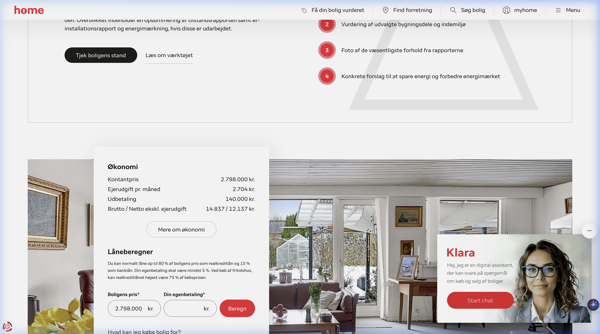
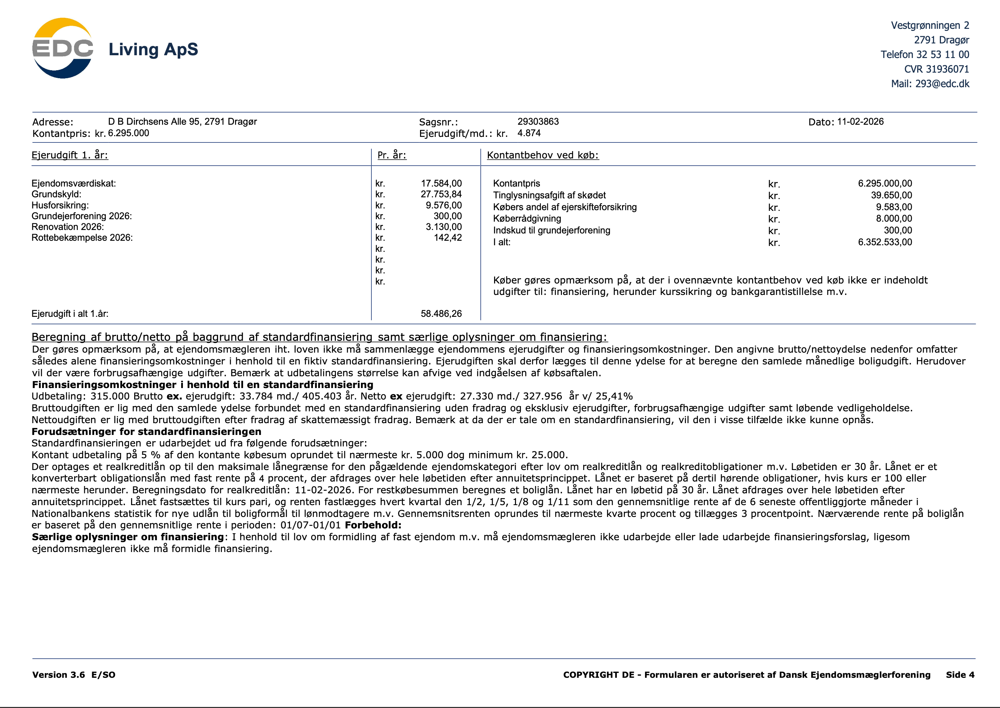
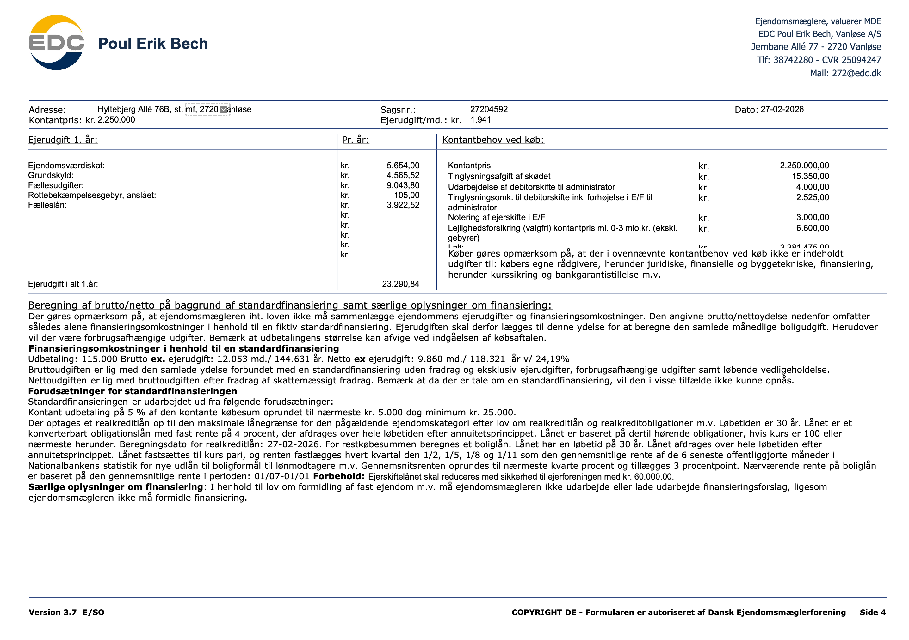

Bolig
Det danske boligmarked er en hjørnesten i både samfundsøkonomien og den enkelte families privatøkonomi. For hovedparten af befolkningen udgør friværdien i boligen den største enkeltstående opsparing, ofte større end pensionsopsparingen. Boligmarkedet er dog også præget af kompleksitet: finansiering, skatteregler, juridiske dokumenter og konstante markedssvingninger.
I 2026 befinder vi os i en æra efter den store boligskattereform fra 2024. Systemet er nu fuldt implementeret, og boligskatterne er mere direkte koblet til de aktuelle vurderinger. Samtidig har rentemarkedet stabiliseret sig på et niveau, der er højere end nullerne i 10'erne, men lavere end de kraftige rentestigninger i 2022. Dette kapitel er en dybdegående guide til boligøkonomi i 2026, der dækker alt fra finansieringstyper og skatteregler til forskellen på ejer- og andelsboliger.
3.1 Historisk Udvikling: Fra Kartoffelkur til 2026
For at forstå nutidens boligmarked er det nødvendigt at se på historien. De seneste 30 år har budt på markante prisstigninger i boligpriserne, kun afbrudt af finanskrisen i 2008 og renteforhøjelserne i 2022. En ejerlejlighed i København er i dag over 6 gange så meget værd som i 1992, korrigeret for inflation.
| Årti | Markante Begivenheder | Renteniveau | Markedstendens |
|---|---|---|---|
| 1990'erne | Kartoffelkuren (slut 80'er) virkede stadig. Opsving fra 1993. | Højt (6-10%) | Stigende fra lavt niveau. |
| 2000-2008 | Flexlån og Afdragsfrihed (2003) introduceres. "Boligboblen" opbygges. | Faldende (4-5%) | Kraftig vækst → Prisfald (2008). |
| 2009-2020 | Finanskrise efterfulgt af Negative Renter. Urbanisering driver storbypriser. | Historisk lavt (0-1%) | Stabilt til kraftigt stigende i byer. |
| 2021-2022 | Corona-boom efterfulgt af Inflationskrise. Renterne 4-dobles på 6 mdr. | Stiger til 5-6% | Prisfald (10-15%) og stagnering. |
| 2024-2026 | Boligskattereform træder i kraft. Markedet stabiliseres. | Stabilt (3-4%) | Moderat vækst (3-5% p.a.). |
3.1.1 Renteudviklingen 2000-2026
Figuren herunder viser udviklingen i den lange realkreditrente (fastforrentet) og den korte rente (F1/F-kort). Bemærk de historisk lave renter fra 2015-2021, der drev priserne op, og det bratte skift i 2022.
Figur 3.1 — Realkreditrenter (Gns. effektiv rente). Kilde: Finans Danmark & Nationalbanken.3.1.2 Prisudvikling: Hus vs. Lejlighed
Lejligheder i storbyerne har historisk set været mere volatile end parcelhuse på landsplan. De stiger hurtigere i opgangstider men falder også dybere i kriser.
Figur 3.2 — Prisindeks (1995=100). Ejerlejligheder vs. Parcelhuse. Kilde: Danmarks Statistik.3.2 Boligformer & Ejerstrukturer
I Danmark skelner vi primært mellem to typer af selvejede boliger: Ejerbolig og Andelsbolig. Derudover findes lejeboliger (almene og private), som ikke behandles i dybden her.
| Ejerbolig | Andelsbolig |
|---|---|
| Det klassiske valg: Du ejer murstenene og grunden (ved hus) eller en ideel anpart af grunden (ved ejerlejlighed). | Fællesskabet: Du køber et andelsbevis i en forening, der giver brugsret til en specifik lejlighed. Foreningen ejer bygningen. |
| Finansiering: 80% Realkredit (billigst), 15% Banklån, 5% Udbetaling. | Finansiering: Kun Banklån (Andelsboliglån, typisk højere rente). Ingen realkredit direkte til andelshaver. |
| Skat: Du betaler Ejendomsværdiskat og Grundskyld. | Skat & Husleje: Ingen ejendomsværdiskat direkte. Grundskyld betales via "Boligafgiften" som også dækker drift og fællesgæld. |
| Gevinst & Frihed: Skattefri ved salg (Parcelhusreglen). Høj grad af frihed til renovering og udlejning. | Prisloft & Salg: Maksimalprisen er fastsat ved lov (Andelskrone). |
3.3 Finansiering i Dybden
Hvor kommer pengene fra?
For at forstå finansieringens grundstruktur i dansk boligøkonomi er det nødvendigt at analysere, hvordan boligerne finansieres:
Ejerbolig (klassisk model)
- 5 % egenbetaling: Kundens egen udbetaling (lovkrav fra Finanstilsynet).
- Op til 80 % realkreditlån: Det billigste lån i Danmark med sikkerhed i selve ejendommen.
- Resten (typisk 15 %) banklån: Dækker oftest gabet mellem realkredit og udbetaling.
Dette system bygger på, at der rent praktisk og juridisk kan tinglyses pant i selve den faste ejendom.
Sankey-diagram (Ejerbolig)
Sankey-diagrammet herunder viser, hvordan en normal ejerboligpris på 3.200.000 kr. opdeles i finansieringskilder, og hvad de årlige ydelser (rente + afdrag) er for hver del. Bemærk forskellen i renteniveauet mellem realkredit og det dyre banklån — det er derfor altid fordelagtigt at maksimere realkreditbelåningen for huse og ejerlejligheder.
Realkreditsystemet (Ejerbolig)
Det unikke ved det danske boligmarked er realkreditsystemet. Når du låner penge i Totalkredit, Realkredit Danmark eller Jyske Realkredit, udsteder de obligationer på børsen, som investorer køber. Det sikrer lave renter og gennemsigtighed.
3.3.1 Realkredit-Låntyperne
| Låntype | Rentesikkerhed | Renteniveau (2026) | Risiko | Konverterbar? |
|---|---|---|---|---|
| Fastforrentet (Obligationslån) |
Fast i 30 år | ~4,0% | Lav | JA - Kursgevinst |
| FlexKort / F-kort (CITA-baseret) |
Ny rente hver 6. mdr. | ~2,5% | Høj | Nej (kurs ~100) |
| F1 / F3 / F5 (Tilpasningslån) |
Fast i 1, 3 eller 5 år | ~2,8% | Mellem | Begrænset |
Fastforrentet lån & Konvertering
Det fastforrentede lån er den mest udbredte basismodel. Som debitor kender du din faste ydelse i 30 år. Desuden indeholder lånet en markant fordel i dansk realkredit: Konverteringsretten.
- Hvis renten stiger: Kursen på din obligation falder. Du kan indfri dit lån til kurs 80 (f.eks.) og skære 20% af din restgæld. Ulempen er, at du skal optage et nyt lån til en højere rente.
- Hvis renten falder: Du kan omlægge lånet til kurs 100 (pari) og få en lavere månedlig ydelse.
Hvad er bidragssats?
Udover renten betaler du en bidragssats til realkreditinstituttet. Det er deres gebyr for at administrere lånet og dække tab. Bidragssatsen afhænger af:
- Belåningsgrad: De yderste 60-80% er dyre end de inderste 0-40%.
- Låntype: Afdragsfrie lån og variable lån er dyrere i bidrag end faste lån med afdrag.
I 2026 ligger bidraget typisk mellem 0,6% og 1,2% p.a.
3.4.2 Lånefordeling i Danmark 2026
Grafen viser, hvordan danske boligejere har fordelt deres gæld. Efter renteforhøjelserne i 2022 søgte mange mod sikkerhed (fast), men i 2025/2026 er interessen for de korte renter (F-kort) vendt tilbage grundet rentespændet.
3.4 Købsprocessen - Trin for Trin
At købe bolig er en juridisk tung proces. Herunder gennemgås de vigtigste trin og dokumenter i processen.
| Trin | Beskrivelse |
|---|---|
| 1. KØBEBEVIS & BUDGET | Inden boligsøgningen igangsættes, bør kunden indhente forhåndsgodkendelse i banken. Banken beregner rådighedsbeløb (det resterende beløb til løbende forbrugsbehov, når alle faste udgifter inkl. boliglån og skat er betalt) og din gældsfaktoren (gæld / bruttoindkomst, typisk max 4). Finanstilsynet og bankerne anbefaler generelt et rådighedsbeløb på ca. 6.500 kr. for enlige og ca. 11.000-14.400 kr. for et par, plus yderligere ca. 2.500 kr. pr. barn. Du får et købebevis, der fortæller, hvad du må købe for. |
| 2. FREMVISNING & RAPPORTER | Når du finder den udvalgte bolig, skal du nærlæse de tre vigtige rapporter, der
udgør kernen i Huseftersynsordningen. Formålet med ordningen er at sikre
både køber og sælger mod ubehagelige økonomiske overraskelser efter handlen. Ved
at få lavet disse rapporter (og tilbyde en ejerskifteforsikring) kan sælger
blive fri for sit 10-årige ansvar for skjulte fejl, mens du som køber får en
uvildig vurdering af boligens stand og energiudgifter. Se sektion 3.4.1 nedenfor for en detaljeret gennemgang af dokumenterne. |
| 3. KØBSAFTALE & RÅDGIVERFORBEHOLD | Du underskriver en købsaftale. VIGTIGT: Få altid indskrevet et advokat- og bankforbehold. Det betyder, at handlen kun gælder, hvis din rådgiver og bank godkender den. Du har også lovpligtig 6 dages fortrydelsesret (koster 1% af købesummen). |
| 4. BERIGTIGELSE & TINGLYSNING | Advokaten laver skødet, som tinglyses digitalt.
|
3.4.1 De Vigtigste Dokumenter i en Bolighandel
En bolighandel involverer en lang række dokumenter. Da reglerne varierer markant afhængigt af, om det er et hus, en ejerlejlighed eller en andelsbolig, har vi her samlet al juridisk og økonomisk viden i én samlet oversigt.
Huseftersynsordningen: Din vigtigste beskyttelse
Huseftersynsordningen er en frivillig forbrugerbeskyttelsesordning, der er designet til at skabe tryghed i bolighandlen. Den består af tre uadskillelige dele:
- Tilstandsrapporten: En uvildig gennemgang af boligens fysiske stand.
- Elinstallationsrapporten: En kontrol af lovligheden og sikkerheden af de faste elinstallationer.
- Ejerskifteforsikringen: En forsikring, der dækker skjulte fejl og mangler, som ikke er nævnt i rapporterne.
Juridisk pointe: Når sælger fremlægger disse rapporter og et tilbud på ejerskifteforsikring (og tilbyder at betale halvdelen), frigøres sælger for sit normale 10-årige ansvar for skjulte fysiske mangler. For dig som køber betyder det, at du i stedet skal rette dine krav mod forsikringsselskabet.
| Dokument & Pris | Status & Boligform | Juridisk Forklaring & Boligtype-forskelle |
|---|---|---|
| Salgsopstilling Inkl. i mæglersalær |
Obligatorisk | Lovpligtigt dokument der sikrer gennemsigtighed. Indeholder alle nøgletal for økonomien, herunder udbetaling og ejerudgifter. Grundlaget for bankens kreditvurdering. Gælder alle boligformer. |
| Energimærke 4.000 - 7.000 kr. |
Obligatorisk | Energimærket er en lovpligtig dokumentation for en bygnings energimæssige stand. Det fungerer som en varedeklaration (ligesom på hvidevarer) på en skala fra A til G. Rapporten indeholder en beregning af boligens forventede udgifter til varme, vand og el, samt konkrete forslag til energimæssige forbedringer, der kan nedsætte de løbende driftsomkostninger. Gælder i 10 år. |
| Tilstandsrapport 4.000 - 8.000 kr. |
Hus: Frivillig /
Uundværlig Lejl./Andel: Fravælges oftest |
Hvorfor "Frivillig"? Sælger vælger formelt selv at få den lavet, men i
praksis er den uundværlig for huse, da den er en forudsætning for 10 års
ansvarsfrihed for sælger og muligheden for ejerskifteforsikring for køber. Analysen: En beskikket bygningssagkyndig gennemgår boligens synlige fysiske tilstand og klassificerer fejl (typisk K1, K2 eller K3). Forskellen: Ved huse ejer man hele matriklen, mens man ved lejligheder/andele ofte kun har vedligeholdelsesansvar for de indre vægge. Da det er uforholdsmæssigt dyrt at vurdere en hel boligblok (fællesarealer) for at sælge én lejlighed, fravælges rapporten oftest her. Sælger beholder dog derved sit 10-årige ansvar. |
| Elinstallationsrapport 1.500 - 3.000 kr. |
Hus: Frivillig /
Uundværlig Lejl./Andel: Fravælges oftest |
Sikkerhed for installationer: Rapporten er en del af
huseftersynsordningen og sikrer sælger mod fremtidige krav vedrørende ulovlige
eller farlige elinstallationer. Undtagelsen: Ligesom ved tilstandsrapporten fravælges den ofte ved ejerlejligheder pga. komplekse fællesinstallationer. Ved andelsboliger bruges den aldrig, da foreningen har det fulde vedligeholdelsesansvar for faste installationer. |
| Ejerskifteforsikring 15.000 - 30.000 kr. (50/50) |
Hus: Standard. Lejl./Andel: Kan sjældent tegnes. |
Dækker skjulte byggetekniske fejl i 5 eller 10 år. Sælger skal betale halvdelen for at blive ansvarsfri. Uden rapport (som ved lejligheder) kan forsikringen ikke tegnes, og sælger hæfter personligt for mangler i 10 år. |
| Hus- / Brandforsikring 4.000 - 8.000 kr./år |
Hus: Lån-krav. Lejl./Andel: Fælles forsikring. |
Huse: Realkreditlån kræver Brandforsikring. Kontantkøb: Her kan du teoretisk fravælge forsikring (f.eks. ved nedrivning), men det er en enorm risiko. Lejl./Andele: Forsikringen betales kollektivt over fællesudgifterne. |
3.4.2 Omkostninger ved køb (Kontantbehov)
Udover udbetalingen på mindst 5 % af købesummen (eller den tekniske pris for en andel) skal du have kontanter klar til "omkostninger ud over købesummen". Disse kan nemlig sjældent finansieres i dit realkreditlån og trækkes derved fra dit frie rådighedsbudget.
| Post | Estimat (Hus til 3 mio. kr.) |
|---|---|
| Tinglysning af skøde (0,6% + 1.850) | 19.850 kr. |
| Tinglysning af lån (1,25% + 1.825) | 35.575 kr. |
| Ejerskifteforsikring (½ præmie) | Ca. 10.000 kr. |
| Advokat / Køberrådgiver | Ca. 10.000 kr. |
| Bankgebyrer / Kurtage | Ca. 5.000 kr. |
| I alt kontantbehov (udover 5%) | Ca. 80.425 kr. |

Ejerboligen: Sådan læser du tallene
I dette eksempel på et typisk house præsenteres man for de klassiske boligudgifter i en salgsopstilling:
- Kontantpris (f.eks. 2.798.000 kr.): Den pris boligen udbydes til af sælger. Det danner grundlaget for beregningen af dit lånebehov. I en fri handel er dette beløb ofte genstand for forhandling i en budrunde eller med et afslag.
- Udbetaling (f.eks. 140.000 kr.): Løber op i præcis 5% for ejerboliger (lovkrav). Minimumsbeløbet du selv skal lægge fra opsparingen for at købe. De resterende 95% lånes (opudtil 80% som realkredit, resten banklån).
- Ejerudgift pr. md. (f.eks. 2.704 kr.): Bygningens
"driftsbudget". Dækker de uundgåelige afgifter - som grundskyld,
eventuel
ejendomsværdiskat,
bygningsforsikring, og renovation.
Bemærk: Varme, vand og el (forbrug) indgår typisk ikke her. Det opgøres særskilt! - Brutto / Netto (f.eks. 14.837 / 12.137 kr.): Mæglerens finansieringsforslag til lånet (ved lån af ca. 95%). Brutto er den samlede låneydelse betalt til banken/realkredit pr. md. Netto is ydelsen efter skattefradraget (rentefradraget). Dit reelle boligbudget skal derfor som minimum kunne rumme nettotallet, egen udbetaling og det løbende forbrug!
3.4.3 Samlet Case: Villa til Salg i Dragør
For at samle al teorien, har vi her samlet en komplet dokumentpakke baseret på
en autentisk boligudbud. Mappen /hus indeholder selve
originalmaterialet til ejendomshandlen, så du kan øve dig i at aflæse faldgruber og
lånetyper.
Ejendommen: D. B. Dirchsens Alle 95, 2791 Dragør. Villa på 149 m².
Komplet Gennemgang af Ejendommens Dokumenter
Her analyserer vi de konkrete og faktiske tal fra dokumenterne til ejendommen D. B. Dirchsens Alle 95, Dragør. Det første og absolut vigtigste dokument du som rådgiver, køber eller mægler får i hånden, er side 1 fra salgsopstillingen. Billedet herunder viser den officielle første side, fyldt med afgørende juridiske og finansielle bindinger.

Filerne kan klikkes og læses i fuld længde. Tabellen nedenfor er casen fra ovenstående billede samt de bagvedliggende rapporter, omsat til konkret viden for finansøkonomen.
| Dokument & Download link | Hvad betyder tallene for netop dette hus? (Eksplicit analyse) |
|---|---|
| Salgsopstilling (PDF) |
Det Absolutte Økonomiske Overblik
|
| Tilstandsrapport (PDF) |
De Fysiske Farer på Ejendommen
Køberrådgiverens Samlede Vurdering: Standen er generelt bedre end normalt for et urenoveret hus fra 1968. Murer/sokkel-skaderne er marginale (K1). Du skal som rådgiver kræve udbedring af den manglende branddør (K3) umiddelbart efter nøgleoverdragelsen, men herudover fremstår huset trygt at overtage fra et realkreditmæssigt forsigtighedsprincip. |
| Energimærke (PDF) |
Beregnet Energi og Den Grønne Investering
Køberrådgiverens Samlede Vurdering: Mærkningsgraden 'D' er forventelig for denne bygningstype og -periode, selv efter tilføjelse af varmepumpen. Investeringspotentialet for en kort tilbagebetalingstid (gennem solceller) er særdeles favorabelt. Boligen udgør dermed en oplagt case for at drøfte et Grønt Boliglån ved låneoptagelsen. |
| Elinstallationsrapport (PDF) |
De Skjulte og Farlige Lovbrud Læser vi oversigten over fejl for dette specifikke hus (side 6-7), slår autorisationsinstallatøren fast, at der er flere graverende fejl, der fører direkte til den overordnede bedømmelse: "Der foreligger risiko for brand".
Rådgivningsvinklen: En køber skal indkalkulere en "elektriker-pulje" straks efter at have underskrevet købsaftalen. Udbedres disse brandskabende "P1/P2/K3"-risici ikke, kan husforsikringen i yderste konsekvens afvise dækning af en fremtidig ildebrand, hvor årsagen utvetydigt viser sig at stamme fra netop den ulovlige forlængerledning i stuen eller den brændte sikringsgruppe. Køberrådgiverens Samlede Vurdering: Tilstanden på husets faste elinstallationer er markant værre end normalt! Rapporten indeholder adskillige forekomster af fejl 11 (ulovlig ledning), manglende aflastninger, samt den alvorlige fejl 9 i eltavlen. Det er en ejendom, hvor køber bør afsætte 10.000-15.000 kr. i sit budget til øjeblikkelig udbedring efter overtagelsen for at sikre husets brandtekniske sikkerhed. |
| Ejerskifteforsikring (PDF) |
Beskyttelsen mod fejl der "ikke fandtes" forinden
|
| Husforsikring (PDF) |
Denne forsikringstype dækker det lovpligtige brandansvar overfor panthaverne. Realkreditinstitutter yder aldrig lån i fast ejendom uden en tinglyst og gyldig brandforsikring som sikkerhedsstillelse. Denne forsikring dækker risikoen ved totalskade og sikrer bankens pant i bygningen. Derudover vælger de fleste købere at tilkøbe de udvidede moduler for svamp, insekt og skjulte rørskader, der fungerer som en formålstjenlig driftsikring mod uforudsete værditab i boligens restlevetid. |
Sankey-diagram: Likviditetsflow For Kontantbehovet (Parcelhus/Ejerbolig)
Diagrammet visualiserer "Kontantbehovet" i øjeblikket du erhverver huset på Dirchsens Allé 95. Selve beløbet på de 6.352.533 kr. brydes ud – og kortlægger finansiering mod retningens endelige modtager (sælger/staten/rådgivning/forsikring).
3.4.4 Samlet Case: Ejerlejlighed til Salg i Vanløse
Som et vigtigt modstykke til huset har vi her en komplet dokumentpakke for en
ejerlejlighed. Forskellen fra "ejerbolig"
(parcelhus) ligger i ejendomsretten: Du
ejer konkret din lejligheds indre (brugerret), mens du indgår i et pligtmæssigt fællesskab
(Ejerforeningen) om bygningens ydre skal, tag, fundament og fællesarealer. Dokumenterne er
placeret i /lejlighed2 mappen.
Ejendommen: Hyltebjerg Allé 76B, st. mf, 2720 Vanløse. Kontantpris: 2.250.000 kr.

De reelle (og markant færre) dokumentkrav
Som nævnt medfører ejerboligens status, at omfanget af tekniske rapporter svinder drastisk. Nedenfor gennemgås de centrale dokumenter i handlen.
| Dokument & Link | Lovkrav / Status | Betydning & Indhold for handlen |
|---|---|---|
| Salgsopstilling (PDF) | Obligatorisk |
Det finansielle grundlag. Salgsopstillingen er handlens vigtigste dokument. Det fastlægger lejlighedens kontantpris (2.250.000 kr.) og den månedlige ejerudgift (1.941 kr.). En central post er "Fællesudgifter" (754 kr./md. / 9.044 kr. årligt). Beløbet dækker ejendommens faste drift som administration, renovation og forsikring. For en lejlighed på 30 m² er dette et rimeligt niveau, der følger markedsstandarden. Posten "Fælleslån" (327 kr./md. / 3.923 kr. årligt) viser lejlighedens andel af foreningens gæld til tidligere forbedringer. Det er vigtigt at bemærke, at sælger her har valgt at lade lånet blive i lejligheden. Det betyder en lavere udbetaling for dig som køber, men en højere månedlig udgift fremover. Vigtig observation: Salgsopstillingen nævner en kommende altanundersøgelse (estimeret til 110.000 kr. for hele foreningen) og behov for udskiftning af vandrør og faldstammer. Da prisen på rørskiftet endnu er ukendt, udgør det en økonomisk risiko, som sandsynligvis vil føre til højere fællesudgifter eller nye lån i fremtiden. |
| Prospekt (PDF) | Frivilligt, supplerende |
Det supplerende salgsmateriale. Prospektet udgør mæglerens supplerende præsentationsmateriale. Dokumentet er ikke juridisk bindende for ejendommens retslige eller byggetekniske tilstand, men har til formål at fremhæve ejendommens æstetiske og geografiske kvaliteter. Materialet rummer typisk fotografisk dokumentation, beskrivelse af infrastruktur og plantegninger. Uagtet den detaljerede præsentation forbliver salgsopstillingen det eneste retligt forpligtende instrument i handlen. Plantegningen udgør imidlertid en væsentlig reference til at verificere eventuelle bygningsændringer, såsom fjernelse af bærende konstruktioner, som påkræver sammenholdning med de originale byggetegninger fra det kommunale byggesagsarkiv (Weblager). |
| Energimærke (PDF) | Obligatorisk (Hele bygningen) |
Vurdering af energiforbruget. Ejendommen har Energiklasse D. Det er vigtigt at forstå, at energimærket her gælder for hele bygningen og ikke kun den enkelte lejlighed. Varmekilden er fjernvarme med en anslået udgift på ca. 1.000 kr. om måneden. Hvad med K-mærker (K1, K2, K3)? Du finder dem ikke her! De tekniske karakterer hører til i en Tilstandsrapport, som normalt fravælges ved lejlighedskøb. Derfor findes der ikke en officiel liste over skader på lejligheden. Som køber skal du i stedet selv tjekke lejligheden grundigt og læse referaterne fra ejerforeningens generalforsamlinger. Klimaskærmen: Bygningens "jakke" (tag, mure og vinduer) er overordnet i stabil drift. I dette konkrete tilfælde oplyses det, at taget er renoveret, hvilket er en stor fordel, da det mindsker risikoen for uventede ekstraregninger til tagarbejde. Dog skal man være opmærksom på klimaskærmens svage punkter, som her er de slidte faldstammer og altaner, der står overfor en teknisk gennemgang. |
| Forsikring (PDF) | Valgfri tillæg (Købers ansvar) |
Risikoafdækning for internt bygningsansvar. Ved handel med fast ejendom i Danmark anvendes normalt huseftersynsordningen. Formålet er at skabe tryghed for både køber og sælger ved at lade sagkyndige udarbejde en tilstandsrapport og en elinstallationsrapport. Når disse foreligger, og sælger tilbyder at dække halvdelen af præmien på en ejerskifteforsikring, opnår sælger en juridisk ansvarsfraskrivelse. Det betyder, at sælger som udgangspunkt ikke kan holdes ansvarlig for skjulte mangler ved bygningen i 10 år efter salget. For ejerlejligheder er situationen dog markant anderledes. Da det er uforholdsmæssigt kompliceret og dyrt at inspicere en hel etageejendoms fællesdele (tag, fundament mv.) for at sælge en enkelt lejlighed, udelades huseftersynsordningen stort set altid. Konsekvensen er, at der hverken findes tilstandsrapport eller elinstallationsrapport, og man kan derfor ikke tegne en traditionel ejerskifteforsikring. Da sælger dermed ikke opnår en ansvarsfraskrivelse, og køber ikke får de tekniske rapporter, opstår en risikoeksponering omkring lejlighedens interne stand. Til afhjælpning af dette udbydes ofte en specialiseret "lejlighedsforsikring", der dækker skjulte fejl i de interne el- og VVS-installationer. Denne forsikringstype, erhvervet for en engangspræmie (eksempelvis 6.600 kr.), yder primær dækning af enhedens indre installationer i en afgrænset periode, typisk fem år. Dækningsomfangets mest centrale element er afdækning af uautoriserede el- og VVS-installationer, som i forudgående ejerskaber kan være foretaget ukorrekt som integrerede løsninger i ejendommens konstruktioner. Iagttaget den betydelige kapitalbinding forbundet med retablering af fejlbehæftede tekniske installationer, udgør præmien en hensigtsmæssig risikoafdækning mod uforudsete kapitaltab grundet skjulte bygningsskader. Forsikringen etablerer dækning for interne følgeskader inden for lejlighedens afgrænsning, imens bygningens eksterne skader påhviler den pligtige bygningsforsikring underlagt ejerforeningen. |
Sankey-diagram: Likviditetsflow For Kontantbehovet (Ejerlejligheden)
Diagrammet visualiserer "Kontantbehovet" i øjeblikket du erhverver Hyltebjerg Allé 76B. Selve beløbet på de 2.281.475 kr. brydes ud – og kortlægger kilde (bank/køberens tegnebog) mod retningens endelige modtager (staten/sælger/Ejerforening).
3.5 Boligskatter i 2026: Ejendomsværdiskat og Grundskyld
Det boligskattesystem, som trådte i kraft i 2024, bygger på et centralt forsigtighedsprincip, hvor staten automatisk trækker 20 % fra den offentlige vurdering for at tage højde for usikkerheden i vurderingssystemet. Det betyder, at beskatningsgrundlaget for både ejendomsværdi og grundskyld er fastsat til kun 80 % af den pålydende ejendoms- og grundværdi.
| Ejendomsværdiskat (Statslig) | Grundskyld (Kommunal) |
|---|---|
| Skatten for at eje og have rådighed over boligen. | Skat beregnet kun af selve grunden (jordens ubebyggede værdi). |
| Almindelig sats: Er fastsat til 0,51 % (5,1 promille) af beskatningsgrundlaget op til progressionsgrænsen. | Sats fastsættelse: De enkelte kommuner beslutter en grundskyldspromille, som højst må være op til 30 promille for normale boliger i 2026. |
| Progressiv sats: For ejendomsværdier, der overstiger 9.007.000 kr. (grænsen i 2026), udgør skatten herover 1,4 % (14 promille). | Massive Lokale Forskelle: Kommuner nedsatte promillen ved vurderingsstigninger; Frederiksberg ramte omtrent 3,1 promille, imens Varde endte omtrent 17,7 promille. |
| Rabat & Nedslag: 1 promille nedslag for boliger anskaffet før sommeren 1998. Grundnedslag til pensionister afhængigt af indkomst. | Forenklet betaling: Fra og med reformen i 2024, betales grundskylden direkte over din skatteopgørelse løbende som skattefradrag via A-skatten. |
Beskyttelse for ejerne:
- Skatterabat (Nominelt fastlåst beløb i kr.): Ejer du en bolig anskaffet før den kritiske overgangsårs-dato januar 2024, har du modtaget en udregnet skatterabat. Den holder og fastlåser i kr. og øre for stigninger ifb. med de nye vurderinger. Rabatten forsvinder totalt permanent fra din ejendoms ret til rabat, når du sælger den i fremtiden.
- Indefrysning af ny bolig- og grundskyld: Skatte-systemet indebærer ret til, at hvis den årlige samlede skat oplever forhøjelser fra året 2025 og fremover (ved løbende stigende vurderinger), bliver denne difference automatisk af sig selv tilskrevet lån i en statslig indefrysningsordning - og betales med statens regning tilbage indtil selve salget af ejendommen effektueres!
Danmarkskort over kommunale grundskyldspromiller (Indikation)
Som nævnt fastsættes grundskyldspromillerne lokalt afhængigt af den enkelte kommune. Dette sikrede ved overgangen, at ingen yderkommuner oplevede utilsigtede skatteudfald, og ingen hovedstadsområder blev pålagt uforholdsmæssige skattestigninger, for at opretholde princippet om en samlet boligskatte-neutral reform.
3.6 Forældrekøb i 2026 - Nye Regler og Konsekvenser
At investere i et forældrekøb har historisk set været en yderst fordelagtig og derved populær struktur for kapitalstærke forældre, især i de store universitetsbyer som København og Aarhus. Før de nye skatte- og vurderingsregler trådte fuldt i kraft, var modellen attraktiv af flere markante økonomiske årsager:
- Højt skattefradrag for renteudgifter: Gennem Virksomhedsordningen (VSO) kunne forældre tidligere trække renterne på boliglånet fra i deres egen topskat. Det betød, at de kunne opnå en skatteværdi af rentefradraget op til ca. 56 %.
- Gunstig overdragelse til barnet: Forældrene kunne ofte sælge lejligheden videre til barnet til en pris, der lå 15 % under den offentlige ejendomsvurdering. Da mange offentlige vurderinger var frosset fast på et kunstigt lavt 2011-niveau, betød det, at lejligheden kunne overdrages massivt under den reelle markedsværdi uden at udløse gaveafgift.
- Skattefri gevinst: Når barnet senere solgte lejligheden efter selv at have boet i den, var hele værdistigningen frem til salgsdatoen fuldstændig skattefri for barnet, i kraft af den såkaldte parcelhusregel.
Det finanspolitiske landskab i 2026 har imidlertid gradvist lukket i for størstedelen af disse skattefordele. I dag er forældrekøb primært en praktisk og driftsmæssig metode til at sikre sine børn en tryg udleje-bolig, som de ikke kan blive opsagt fra, dog oftest med et månedligt driftsunderskud for forældrene pga. de nye strammere skatteregler.
Erhvervsdrivende Skattepligt og Rentefradraget
Når en forælder køber og lejer en ejerbolig ud til sit barn, ændrer Skattestyrelsen status på dig – du anses nu for at være selvstændigt erhvervsdrivende. Du skal udstede en formel lejekontrakt (til markedsleje), føre et strengt regnskab i op til 5 år, og betale personlig eller kapital-skat af lejeoverskuddet. Ejendomsværdiskatten bortfalder til gengæld, fraset for barnet. Der kan trækkes udgifter til ejendomsskat, forsikring og vedligehold fra i overskuddet.
Tidligere var Virksomhedsordningen (VSO) favoritten, idet forældrene heri kunne opnå op til ca. 56% skatteværdi af fradraget på realkredit- og banklånsrenterne! I 2026 har regeringen indført stramninger for forældrekøb ("udlejning til nærtstående"), som reducerer dette fradrag drastisk ned til ca. 25-33%. Det betyder i praksis, at driften er markant dyrere forældrene i 2026 i forhold til blot for få år siden. Mange rådgivere peger nu klienter over på den administrative simplere Kapitalafkastordning.
20 %-reglen (Overdragelse til Barnet)
Hvis forældrene vil sælge/overdrage lejligheden til barnet, uden det udløser skattepligtige bøder eller afgifter for differencen til markedsværdien, kørte man frem til de nye 2024-vurderinger efter 15%-reglen. I 2026, når forsigtighedsprincippet i Finansministeriet trækker 20% af den reelle ejendomsværdi, er systemet nu rykket til 20 %-reglen. Ejendommen kan derved overdrages under markedsværdien lovligt jf. de nye gældende vurderinger. Fortjenesten forældrene dog eventuelt har opnået historisk skal stadig beskattes (Ejd.Avancebeskatningsloven), da de aldrig selv har haft CPR-adresse i lejligheden!
Bemærk: Forældrekøb anbefales som en tommelfingerregel aldrig i andelsboligforeninger. Disse foreninger har oftest et reelt forbud indskrevet i vedtægterne om fremleje, og skattereglerne her er anderledes umedgørlige. I stedet bruger familien et afdragsfrit "familielån" til at lade barnet købe andelen selv.
3.7 Sommerhuse og Fritidsboliger - Luksus & Udlejning
Sommerhusmarkedet har sine egne regelsæt. I 2026 navigerer markedet under de fuldt implementerede boligskatteregler ift. ejendomsværdiskat og grundskyld. Forsigtighedsprincippet (80 % beskatningsgrundlaget) gælder fuldstændig ligesom på almindelig ejerbolig, med en progressionsgrænse på 9.007.000 kr. Skatterabatten hører historien til og findes kun for de ejerskaber stiftet før 1. januar 2024. Bemærk desuden, at pensionister kan trække fordel af at opnå et særligt pensionistnedslag på 2.000 kr. årligt (afh. af indkomst) for selve ejendommen.
Finansiering (Belåningsgraden)
Realkreditinstitutterne anser sommerhuse som et sekundært aktiv, der i økonomiske nedgangstider på rentemarkedet vil blive frasolgt først fra private familiers budgetter. Derfor dikterer loven andre max-satser:
- Max 75 % Realkreditbelåning: Modsat udbetalingskravet på ejerboliger til helårs (80%), må blot 75 % finansieres med billige obligationslån for private sommerhuse. resten og gabet ned til den lovpligtige 5% egen-udbetaling lukkes med dyrt bankboliglån.
- Låntyperne: Belåningen må løbe i fulde 30 år. Du har mulighed for op til 10 års afdragsfrihed. Lån med op til hele 30 års afdragsfrihed gælder i Danmark kun for helårsboliger.
- Erhvervsmæssig Begrænsning (Max 60%): Erhverves huset primært med henblik på at drive erhvervsmæssig udlejningsforretning, reduceres realkreditgrænsen jf. Finanstilsynet til 60%. Kreditvurderingen for kunden ændrer sig desuden under gældsfaktor.
Udlejning og Skattemæssige Fordele
Staten favoriserer generelt, at danske feriehuse stilles til rådighed for turister. Derfor findes der særlige skattemæssige lempelser, forudsat at huset udlejes igennem et officielt registreret udlejningsbureau i 2026:
- Bundfradraget (2026-sats): De første 46.100 kr. af den fremsendte lejeindtægt er 100 % skattefrie for boligejeren (indkomstår 2026).
- 40 % Standardfradrag: For indtjening, der ligger ud over disse 46.100 kr., trækkes der yderligere et statsligt standardfradrag på formelle 40 % fra. Det er udelukkende restbeløbet her fra, der sendes ind til almindelig kapitalindkomstbeskatning.
- Den effektive beskatning: Sættes et typisk sommerhus til udlejning og genererer fx 80.000 kr. i indkomst, udgør den samlede effektive beskatning en meget lille andel af bruttoindtægten sammenlignet med almindelig kapitalbeskatning.
- Hæftelse for indskud: Dette er det mest normale og sikre for dig. Du kan maksimalt miste de penge, du har betalt for selve andelen (købsprisen). Kreditorer kan ikke komme efter din personlige formue herudover.
- Pro rata hæftelse: Du hæfter for gælden i forhold til dit fordelingstal.
- Solidarisk hæftelse: Den mest risikable form. Her hæfter alle andelshavere "en for alle og alle for en" for foreningens samlede gæld. Kreditorerne kan i princippet kræve hele gælden indfriet hos den andelshaver, der har flest penge. at du (typisk) selv afdrager banklånet for "købsprisen".
- Teknisk pris (f.eks. 1.767.643 kr.): Dette nøgletal tillader dig at sammenligne med ejerboligmarkedet! Det udregnes som: Købspris + din andel af foreningens samlede gæld. Denne umiddelbart billige andelsbolig til 175.000 kr. indebærer dermed mere end 1,5 millioner kr. i fællesgæld. Ligger den tekniske pris tæt på ejerlejlighedernes priser i området, er andelen ikke prismæssigt fordelagtig ud fra et teknisk synspunkt.